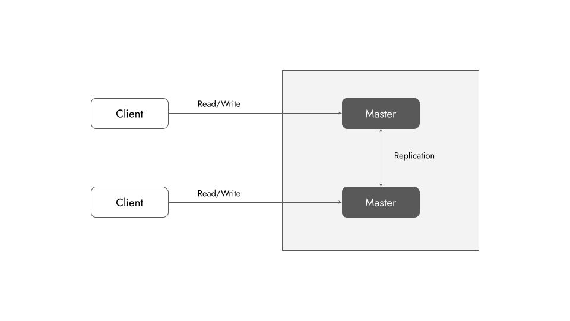
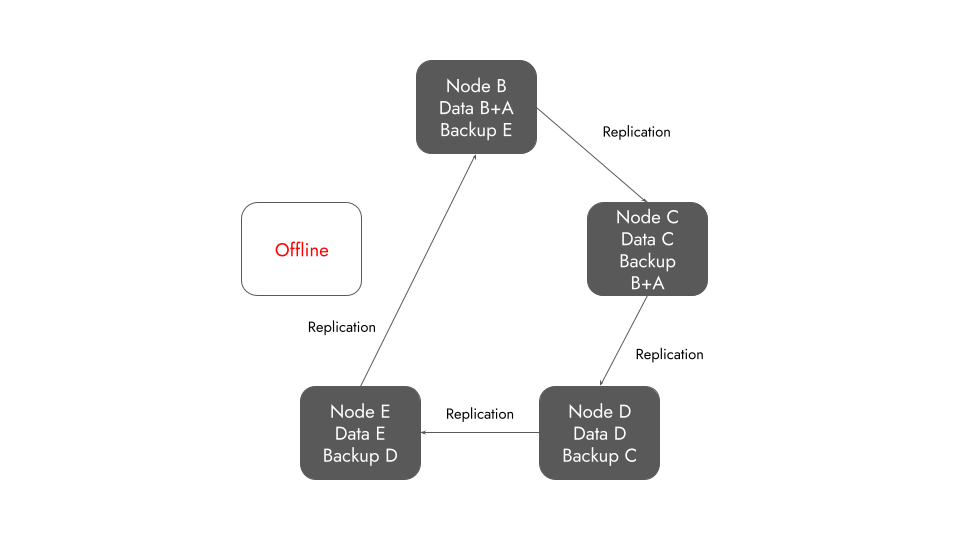

Passive Replication in Distributed Database Systems
Brewer’s CAP Theorem
In theoretical computer science, the CAP theorem, also named Brewer’s theorem after computer scientist Eric Brewer, states that any distributed data store can only provide two of the following three guarantees:
- Consistency: Every read receives the most recent write or an error.
- Availability: Every request receives a (non-error) response, without the guarantee that it contains the most recent write.
- Partition tolerance: The system continues to operate despite an arbitrary number of messages being dropped (or delayed) by the network between nodes.
In a distributed database system, we have network partitions (P in CAP) by default. So we get to pick only one of
- Availability
- Consistency
In this post, I am focusing on the AP combination and I will briefly discuss availability is ensured using database replication.
Availability using Replication
Availability in a distributed system ensures that the system remains operational 100% of the time. Every request gets a (non-error) response regardless of the individual state of a node.
There are two types of database replications:
- Active replication - Push
- Passive replication - Pull
Active Replication
In active replication each client request is processed by all the servers. So all of the distributed data storage gets updated actively.
Passive Replication
In passive replication there is only one server (called primary) that processes client requests. After processing a request, the primary data storage updates the others passively.
How do the data stores do this?
Passive Replication Methods
- Master-Slave replication
- Tree replication
- Master-Master replication
- Buddy replication
1. Master-Slave Replication
A generic replication method.
- Master (primary storage) gets the latest data.
- Slaves (secondary storages) replicate the data internally.

2. Tree Replication
A structure similar to a tree is maintained. In this case, all the parent nodes are masters and the child nodes are slaves.
- Master (tree root) gets the latest data.
- Child masters and their slaves replicate the data internally.

3. Master-Master Replication
Every storage is maintained as primary or master.
- Every master storage can get latest data.
- They replicate each other to stay updated.

4. Buddy Replication
A ring topology of data storage servers.
- Each node stores the backup of the previous node on the chain.
- The backup is performed using replication.

But what if a node goes offline?
The solution is easy.
- Store extra backup.
- Update the replication chain.

Hero image taken from unDraw